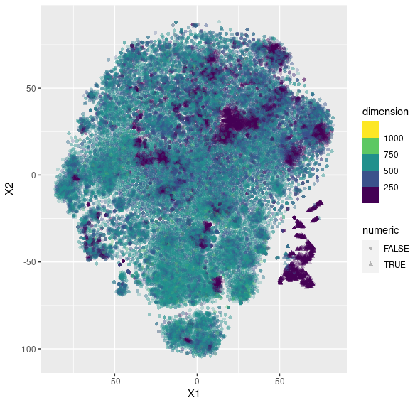

Brain Pictures and the Shape of Tokens
June 14, 2026
Pictures of brains make things seem believable.1 This was a compounding factor in the rise of fMRI/functional neuroscience, and possibly led us to overlook the p-hacking until it was too late (and revealed by the all-time-great Dead Fish Paper2).
Well, with that cautionary context, check out these cool visualizations of LLMs looking suspiciously brain-like. They're actually from a paper examining the shape of the distribution of tokens, which is sort of a representation of how similar an LLM thinks words are to one another.

Something that's really interesting in this paper is that it highlights the distributions of numerals, and shows how their proximity to, or distance from, letters and parts of words has consequences for LLMs' ability to reason beyond the qualitative.
The motivation for the paper is even deeper. They question — and effectively disprove — the notion that the token embedding space is a shape at all. They ask whether the token embeddings are part of a "manifold," which is to say, anything from a perfectly flat plane to a perfectly round sphere (and any distortions in between), where you can, from any given point, basically "keep going" in any direction and expect the shape to continue out before you.
The authors self-referentially note that it's wild to be the first ones investigating a pretty obvious question.
That said, this paper is from 2024, and investigates models of that era — Mistral 7B, GPT-2, and Llemma 7B. They've written a follow-up since then, which I'm excited to get through!
- McCabe, D. P., & Castel, A. D. (2008). "Seeing is believing: The effect of brain images on judgments of scientific reasoning." Cognition, 107(1), 343–352. [link] ↩
- Bennett, C. M., Baird, A. A., Miller, M. B., & Wolford, G. L. "Neural correlates of interspecies perspective taking in the post-mortem Atlantic Salmon" — the "Dead Fish Paper." [link] ↩